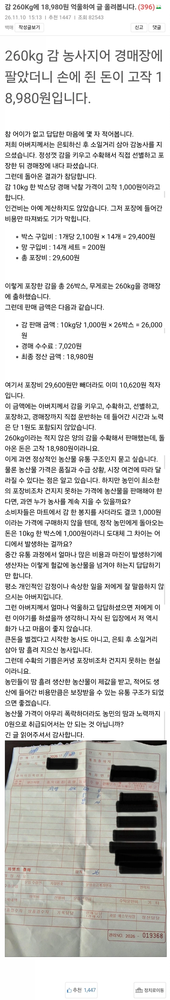

올해 사과도 가격 엄청 떨어짐ㅋㅋ
우리 지역만 그런가
감이 도처에 가득 달린 상태로 널려있음
그거 보고 감 농사로 수익이 가능한가 싶더라..
지금 기준으론 팩트 맞음
감 존나 널렸어.. 그리고 사먹는사람도 드물고..
감 존나 많아 우리도 지금 부동산 하시는 친척분이 틈틈히 농사도하시는데
올해 고추, 사과, 감 미칠듯하게 나눠주셔서 답이없음.
시골집들은 기본적으로 감나무 2~3그루씩은 다 집안에 심어놨지 않나
경매장 들어가기전에 시세는 못보는 시스템인가??
대략 얼만지보고 계산해서 팔아도 손해면 포장도 안하고 운반도 안하고.. 주변에 다 나눠주고 치우지
지인이 귀농해서 농사짓는데 들어보니까 농사보험 같은게 있어서 작물값이 헐값이라 수확하는데 인건비가 더 많이들것 같으면 그냥 엎어버리고 보험금 받던는다던데
감 과수원? 감 농사?는 이런거 없나??
전날 시세를 볼 수 있음 인터넷에 그 지역 공판장 검색하면 전국에 있는 공판장 시세 다 나옴
이건 담합도 아니고 중개업자가 날먹하는거도 아닌데 뭐 어쩌라는건지
저래서는 돈 못버는건 맞는데 가격이 바닥이긴 하네
품질을 겁나 올려서 백화점 직판이나 곶감으로 저장성 올려서 쟁여놓거나 지역 협동조합에서 밀어주는 작물 하는수밖에
애당초 경매장은 돈벌려고 가는곳음 아니지 않나? 팔 거 다 팔고 남은 매물만 처분하러 보낸다고 들었는데 채소랑 또 다른가?
근데 씨부레 과일가게는 왜이렇게 비싸
와.. 끔찍하다
해결하기 쉽지않겠지만 그냥 봤을때도 문제긴하네
우리딸 감 좋아하는데 마트 8갠가 봉지에 든게 만원이던디...
왤케 비싸게 삼 난 엊그제 그정도 개수에 2500원에 파는거 봤는데
소비자가 별 수 있나ㅠ 집앞 마트에서 그리 팔겠다는데 흙흙 사과값도 떨어진다더니 쪼매난 부사 5개 만원...
네이버스토어 같은 곳에서 직매하는게 제일 좋음
풍년인가 🤔
올해 태풍이 안와서 과일류는 헐값이더라
감 퓨레나 잼으로 만들어서 오래 보관하면서 팔았으면 더 나았겠다
감은 끓이면 떫은맛이 올라와서 잼으로 못만듬...
그게 가능했으면 감 쨈 진짜 맛있었을텐데
감농사 짓는 청년임.
집안대대로 짓던거 물려받아 하고 있음.
약 1만평 정도 짓고 올해 6000박스 가량 출하함.
감도 사이즈별로 가격이 상이함
공판장 오늘 시세 기준
2L 44,000원
L 32,000원
M 23,000원
S 13,000원
2S 9,000원 임.
농사도 잘 지어서 큰 열매를 만들어야 돈이 됨.
농사를 잘 못지어서 2S 다마가 많은 과수원은 농약값, 인건비도 못건지고 손해봄. 2S다마 한 박스당 9,000원에서 박스값 -2,000원, 유통수수료 -5,000원하면 겨우 2,000원 건짐. 거기에 인건비 빼고나면 손해.
고생한거에 비해 나도 올해 순수익 4,000만원도 안될 것 같음. 직거래판로가 없으면 살아남기 힘들다고 보고 내년부터 적극적으로 인터넷 판매 해보려고 하는데 단감이 워낙 인기가 없어서 막막함.. 단감 많이 사랑해줘
그치만 많이 먹으면 방귀나오는걸
소비자는 좀 사고싶은데
진짜 어카냐 ㅠ
요즘 사람들 감 자체를 잘 안 먹음
농사는 원래 저럴 때도 있고 많이 벌 때도 있음
음.... 그럼 경매부치지말고 직거래로 팔았으면 되는거 아닌가 쉬운길 선택하고 징징대는걸로밖에안보이는데
걍 소비에 비해서 공급이 미친듯해서 그럼 지금 사과빼고 모든 과일이 헐값이야